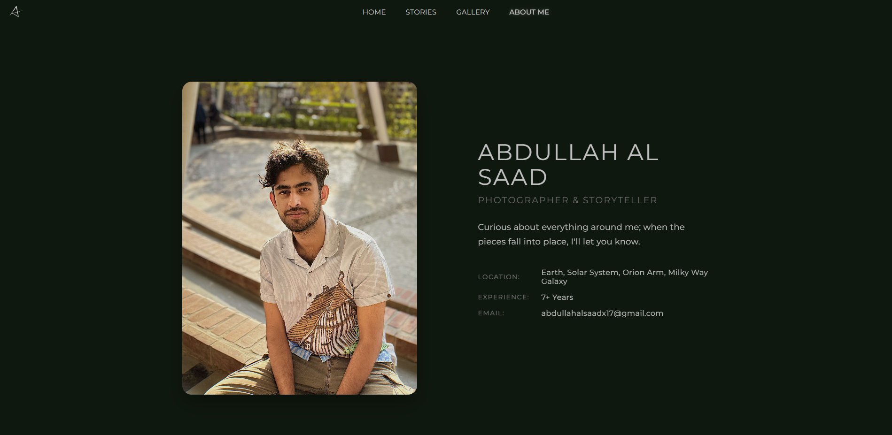

Complete
PHOTOGRAPHER WEBSITE
I built my very first personal website—it's not perfect, but it made me excited to learn and create. Even with its little flaws, I'm honestly proud of what I made.
Key Features
- Basic UI/UX Design
- Responsive Architecture
- Performance Optimization
- Basic Infrastructure
100% Complete